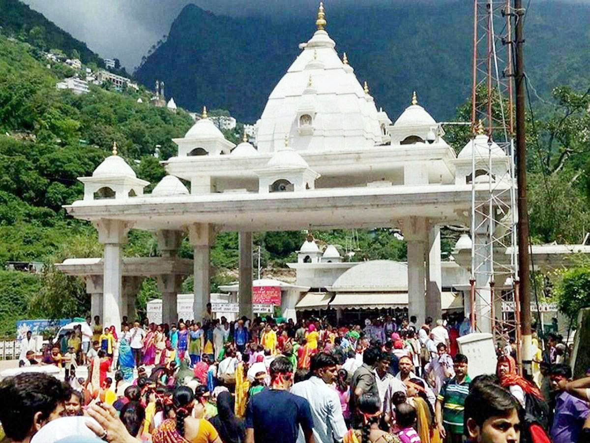

Navratri Festival
Navratri is a major festival celebrated in reasi dedicated to the worship of the goddess Durga. The city comes alive with vibrant decorations, cultural programs, and religious processions.

Diwali Festival
Diwali, the festival of lights, is one of the most important festivals in reasi and across India. It symbolizes the victory of light over darkness and good over evil.

Holi Festival
Holi, the festival of colors, is celebrated with great enthusiasm in reasi. It marks the arrival of spring and the triumph of good over evil. People throw colored powders, spray water, and celebrate by dancing and singing.

Vaishno Devi Yatra
Pilgrimage season peaks during the festival months, attracting millions of devotees who walk the sacred route to the Vaishno Devi Temple.